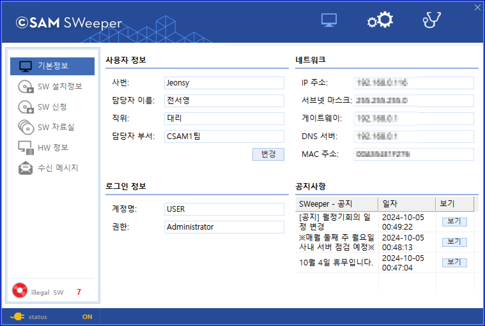

11-3. 사용자 UI
11-3. 사용자 UI
Source: https://www.sweeper.or.kr/etc/manual/11-3UI.html
11-3. 사용자 UI


PC의 사용자는 ClientUI 화면을 통해 PC의 기본정보 및 사용자 정보와 해당 PC의 합/불법 소프트웨어 현황을 확인할 수 있습니다. 또한 필요한 소프트웨어를 관리자에게 신청하거나, 자료실에서 소프트웨어를 다운받고 설치할 수 있습니다. 그외 관리자가 보낸 메시지 및 공지사항 등을 확인할 수 있습니다.
- Windows

- Mac

© Copyright SWeeper Inc.. All Rights Reserved